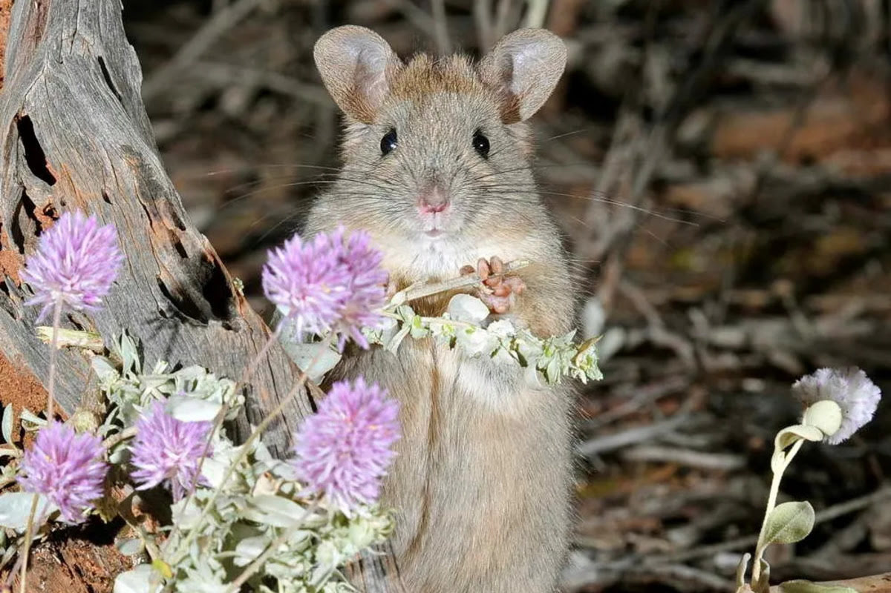

Greater Stick-nest Rat Leporillus conditor The Greater Stick-nest Rat is a distinctive rodent native to Australia, known for its large size and unique nesting behavior. These rats build elaborate stick nests, often high in trees, to protect themselves from predators and the elements.

Habitat
Greater Stick-nest Rats are primarily found in arid and semi-arid regions of central Australia. They inhabit spinifex grasslands, rocky outcrops, and woodland areas where they build their characteristic stick nests. These nests provide shelter and a safe haven from predators.
Diet
The diet of Greater Stick-nest Rats consists mainly of seeds, leaves, and roots of various plants, including spinifex grass and other native vegetation. They are also known to consume insects and other small invertebrates found within their habitat.
Conservation Status
Greater Stick-nest Rats are classified as endangered, with populations significantly reduced due to habitat loss, predation by introduced species, and climatic changes. Conservation efforts include habitat restoration, captive breeding programs, and reintroduction to former habitats.
How to Help
You can help protect Greater Stick-nest Rats by supporting conservation organizations, advocating for the preservation of their natural habitats, and spreading awareness about their endangered status. Donations to wildlife conservation groups and participation in habitat restoration projects are crucial for their survival.
"Saving Australia's Endangered, Together for a Wilder Future"